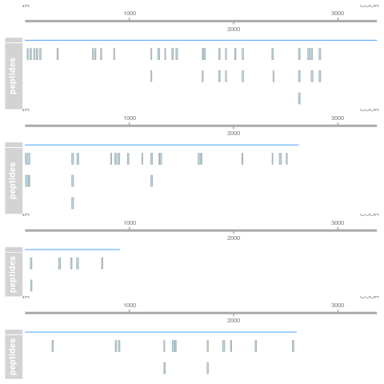
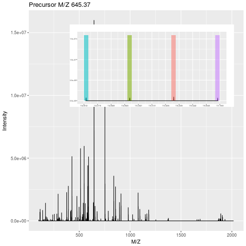

| Label-free | Labelled | |
|---|---|---|
| MS1 | XIC | SILAC, 15N |
| MS2 | Counting | iTRAQ, TMT |
4 Quantitative data
4.1 Quantitation methodologies
There are a wide range of proteomics quantitation techniques that can broadly be classified as labelled vs. label-free, depending on whether the features are labelled prior the MS acquisition and the MS level at which quantitation is inferred, namely MS1 or MS2.
4.1.1 Label-free MS2: Spectral counting
In spectral counting, one simply counts the number of quantified peptides that are assigned to a protein.

Pbase package.4.1.2 Labelled MS2: Isobaric tagging
Isobaric tagging refers to the labelling using isobaric tags, i.e. chemical tags that have the same mass and hence can’t be distinguished by the spectrometer. The peptides of different samples (4, 6, 10, 11 or 16) are labelled with different tags and combined prior to mass spectrometry acquisition. Given that they are isobaric, all identical peptides, irrespective of the tag and this the sample of origin, are co-analysed, up to fragmentation prior to MS2 analysis. During fragmentation, the isobaric tags fall of, fragment themselves, and result in a set of sample specific peaks. These specific peaks can be used to infer sample-specific quantitation, while the rest of the MS2 spectrum is used for identification.

4.1.3 Label-free MS1: extracted ion chromatograms
In label-free quantitation, the precursor peaks that match an identified peptide are integrated over retention time and the area under that extracted ion chromatogram is used to quantify that peptide in that sample.
4.1.4 Labelled MS1: SILAC
In SILAC quantitation, sample are grown in a medium that contains heavy amino acids (typically arginine and lysine). All proteins grown in this heavy growth medium contain the heavy form of these amino acids. Two samples, one grown in heavy medium, and one grown in normal (light) medium are then combined and analysed together. The heavy peptides precursor peaks are systematically shifted compared to the light ones, and the ratio between the height of a heavy and light peaks can be used to calculate peptide and protein fold-changes.

These different quantitation techniques come with their respective benefits and distinct challenges, such as large quantities of raw data processing, data transformation and normalisation, missing values, and different underlying statistical models for the quantitative data (count data for spectral counting, continuous data for the others).
In terms of raw data quantitation in R/Bioconductor, most efforts have been devoted to MS2-level quantitation. Label-free XIC quantitation has been addressed in the frame of metabolomics data processing by the xcms infrastructure.
4.2 QFeatures
Mass spectrometry-based quantitative proteomics data can be represented as a matrix of quantitative values for features (PSMs, peptides, proteins) arranged along the rows, measured for a set of samples, arranged along the columns. There is a common representation for such quantitative data set, namely the SummarizedExperiment (Morgan et al. 2020) class:
SummarizedExperiment object. (Figure taken from the SummarizedExperiment package vignette.)- The sample (columns) metadata can be accessed with the
colData()function. - The features (rows) metadata can be accessed with the
rowData()column. - If the features represent ranges along genomic coordinates, these can be accessed with
rowRanges() - Additional metadata describing the overall experiment can be accessed with
metadata(). - The quantitative data can be accessed with
assay(). -
assays()returns a list of matrix-like assays.
4.2.1 The QFeatures class
While mass spectrometers acquire data for spectra/peptides, the biological entity of interest are the protein. As part of the data processing, we are thus required to aggregate low-level quantitative features into higher level data.

QFeatures object and the aggregative relation between different assays.We are going to start to familiarise ourselves with the QFeatures class implemented in the QFeatures package. The class is derived from the Bioconductor MultiAssayExperiment (Ramos et al. 2017) (MAE) class. Let’s start by loading the QFeatures package.
Next, we load the feat1 test data, which is composed of single assay of class SummarizedExperiment composed of 10 rows and 2 columns.
data(feat1)
feat1
## An instance of class QFeatures containing 1 assays:
## [1] psms: SummarizedExperiment with 10 rows and 2 columnsLet’s perform some simple operations to familiarise ourselves with the QFeatures class:
We can also further annotate the experiment by adding columns to the colData slot:
4.2.2 Feature aggregation
The central functionality of the QFeatures infrastructure is the aggregation of features into higher-level features while retaining the link between the different levels. This can be done with the aggregateFeatures() function.
The call below will
- operate on the
psmsassay of thefeat1objects; - aggregate the rows of the assay following the grouping defined in the
peptidesrow data variables; - perform aggregation using the
colMeans()function; - create a new assay named
peptidesand add it to thefeat1object.
feat1 <- aggregateFeatures(feat1, i = "psms",
fcol = "Sequence",
name = "peptides",
fun = colMeans)
feat1
## An instance of class QFeatures containing 2 assays:
## [1] psms: SummarizedExperiment with 10 rows and 2 columns
## [2] peptides: SummarizedExperiment with 3 rows and 2 columns- Let’s convince ourselves that we understand the effect of feature aggregation and repeat the calculations manually and check the content of the new assay’s row data.
## SYGFNAAR
colMeans(assay(feat1[[1]])[1:3, ])
## S1 S2
## 2 12
assay(feat1[[2]])["SYGFNAAR", ]
## S1 S2
## 2 12
## ELGNDAYK
colMeans(assay(feat1[[1]])[4:6, ])
## S1 S2
## 5 15
assay(feat1[[2]])["ELGNDAYK", ]
## S1 S2
## 5 15
## IAEESNFPFIK
colMeans(assay(feat1[[1]])[7:10, ])
## S1 S2
## 8.5 18.5
assay(feat1[[2]])["IAEESNFPFIK", ]
## S1 S2
## 8.5 18.5rowData(feat1[[2]])
## DataFrame with 3 rows and 4 columns
## Sequence Protein location .n
## <character> <character> <character> <integer>
## ELGNDAYK ELGNDAYK ProtA Mitochondr... 3
## IAEESNFPFIK IAEESNFPFI... ProtB unknown 4
## SYGFNAAR SYGFNAAR ProtA Mitochondr... 3We can now aggregate the peptide-level data into a new protein-level assay using the colMedians() aggregation function.
feat1 <- aggregateFeatures(feat1, i = "peptides",
fcol = "Protein",
name = "proteins",
fun = colMedians)
feat1
## An instance of class QFeatures containing 3 assays:
## [1] psms: SummarizedExperiment with 10 rows and 2 columns
## [2] peptides: SummarizedExperiment with 3 rows and 2 columns
## [3] proteins: SummarizedExperiment with 2 rows and 2 columns
assay(feat1[["proteins"]])
## S1 S2
## ProtA 3.5 13.5
## ProtB 8.5 18.54.2.3 Subsetting and filtering
The link between the assays becomes apparent when we now subset the assays for protein A as shown below or using the subsetByFeature() function. This creates a new instance of class QFeatures containing assays with the expression data for protein, its peptides and their PSMs.
feat1["ProtA", , ]
## An instance of class QFeatures containing 3 assays:
## [1] psms: SummarizedExperiment with 6 rows and 2 columns
## [2] peptides: SummarizedExperiment with 2 rows and 2 columns
## [3] proteins: SummarizedExperiment with 1 rows and 2 columnsThe filterFeatures() function can be used to filter rows the assays composing a QFeatures object using the row data variables. We can for example retain rows that have a pval < 0.05, which would only keep rows in the psms assay because the pval is only relevant for that assay.
filterFeatures(feat1, ~ pval < 0.05)
## 'pval' found in 1 out of 3 assay(s)
## No filter applied to the following assay(s) because one or more filtering variables are missing in the rowData: peptides, proteins.
## You can control whether to remove or keep the features using the 'keep' argument (see '?filterFeature').
## An instance of class QFeatures containing 3 assays:
## [1] psms: SummarizedExperiment with 4 rows and 2 columns
## [2] peptides: SummarizedExperiment with 0 rows and 2 columns
## [3] proteins: SummarizedExperiment with 0 rows and 2 columnsOn the other hand, if we filter assay rows for those that localise to the mitochondrion, we retain the relevant protein, peptides and PSMs.
filterFeatures(feat1, ~ location == "Mitochondrion")
## 'location' found in 3 out of 3 assay(s)
## An instance of class QFeatures containing 3 assays:
## [1] psms: SummarizedExperiment with 6 rows and 2 columns
## [2] peptides: SummarizedExperiment with 2 rows and 2 columns
## [3] proteins: SummarizedExperiment with 1 rows and 2 columnsYou can refer to the Quantitative features for mass spectrometry data vignette and the QFeatures manual page for more details about the class.
4.3 Creating QFeatures object
While QFeatures objects can be created manually (see ?QFeatures for details), most users have a quantitative data in a spreadsheet or a data.frame. In such cases, the easiest is to use the readQFeatures function to extract the quantitative data and metadata columns. Below, we load the hlpsms dataframe that contains data for 28 PSMs from the TMT-10plex hyperLOPIT spatial proteomics experiment from (Christoforou et al. 2016). The ecol argument specifies that columns 1 to 10 contain quantitation data, and that the assay should be named psms in the returned QFeatures object, to reflect the nature of the data.
data(hlpsms)
hl <- readQFeatures(hlpsms, ecol = 1:10, name = "psms")
hl
## An instance of class QFeatures containing 1 assays:
## [1] psms: SummarizedExperiment with 3010 rows and 10 columnsBelow, we see that we can extract an assay using its index or its name. The individual assays are stored as SummarizedExperiment object and further access its quantitative data and metadata using the assay and rowData functions.
hl[[1]]
## class: SummarizedExperiment
## dim: 3010 10
## metadata(0):
## assays(1): ''
## rownames(3010): 1 2 ... 3009 3010
## rowData names(18): Sequence ProteinDescriptions ... RTmin markers
## colnames(10): X126 X127C ... X130N X131
## colData names(0):
hl[["psms"]]
## class: SummarizedExperiment
## dim: 3010 10
## metadata(0):
## assays(1): ''
## rownames(3010): 1 2 ... 3009 3010
## rowData names(18): Sequence ProteinDescriptions ... RTmin markers
## colnames(10): X126 X127C ... X130N X131
## colData names(0):
head(assay(hl[["psms"]]))
## X126 X127C X127N X128C X128N X129C
## 1 0.12283431 0.08045915 0.070804055 0.09386901 0.051815695 0.13034383
## 2 0.35268185 0.14162381 0.167523880 0.07843497 0.071087436 0.03214548
## 3 0.01546089 0.16142297 0.086938133 0.23120844 0.114664348 0.09610188
## 4 0.04702854 0.09288723 0.102012167 0.11125409 0.067969116 0.14155358
## 5 0.01044693 0.15866147 0.167315736 0.21017494 0.147946673 0.07088253
## 6 0.04955362 0.01215244 0.002477681 0.01297833 0.002988949 0.06253195
## X129N X130C X130N X131
## 1 0.17540095 0.040068658 0.11478839 0.11961594
## 2 0.06686260 0.031961793 0.02810434 0.02957384
## 3 0.15977819 0.010127118 0.08059400 0.04370403
## 4 0.18015910 0.035329902 0.12166589 0.10014038
## 5 0.17555789 0.007088253 0.02884754 0.02307803
## 6 0.01726511 0.172651119 0.37007905 0.29732174
head(rowData(hl[["psms"]]))
## DataFrame with 6 rows and 18 columns
## Sequence ProteinDescriptions NbProteins ProteinGroupAccessions
## <character> <character> <integer> <character>
## 1 SQGEIDk Tetratrico... 1 Q8BYY4
## 2 YEAQGDk Vacuolar p... 1 P46467
## 3 TTScDTk C-type man... 1 Q64449
## 4 aEELESR Liprin-alp... 1 P60469
## 5 aQEEAIk Isoform 2 ... 2 P13597-2
## 6 dGAVDGcR Structural... 1 Q6P5D8
## Modifications qValue PEP IonScore NbMissedCleavages
## <character> <numeric> <numeric> <integer> <integer>
## 1 K7(TMT6ple... 0.008 0.11800 27 0
## 2 K7(TMT6ple... 0.001 0.01070 27 0
## 3 C4(Carbami... 0.008 0.11800 11 0
## 4 N-Term(TMT... 0.002 0.04450 24 0
## 5 N-Term(Car... 0.001 0.00850 36 0
## 6 N-Term(TMT... 0.000 0.00322 26 0
## IsolationInterference IonInjectTimems Intensity Charge mzDa
## <integer> <integer> <numeric> <integer> <numeric>
## 1 0 70 335000 2 503.274
## 2 0 70 926000 2 520.267
## 3 0 70 159000 2 521.258
## 4 0 70 232000 2 531.785
## 5 0 70 212000 2 537.804
## 6 0 70 865000 2 539.761
## MHDa DeltaMassPPM RTmin markers
## <numeric> <numeric> <numeric> <character>
## 1 1005.54 -0.38 24.02 unknown
## 2 1039.53 0.61 18.85 unknown
## 3 1041.51 1.11 10.17 unknown
## 4 1062.56 0.35 29.18 unknown
## 5 1074.60 1.70 25.56 Plasma mem...
## 6 1078.51 -0.67 21.27 Nucleus - ...For further details on how to manipulate such objects, refer to the MultiAssayExperiment (Ramos et al. 2017) and SummarizedExperiment (Morgan et al. 2020) packages.
It is also possible to first create a SummarizedExperiment, and then only include it into a QFeatures object.
se <- readSummarizedExperiment(hlpsms, ecol = 1:10)
se
## class: SummarizedExperiment
## dim: 3010 10
## metadata(0):
## assays(1): ''
## rownames(3010): 1 2 ... 3009 3010
## rowData names(18): Sequence ProteinDescriptions ... RTmin markers
## colnames(10): X126 X127C ... X130N X131
## colData names(0):At this stage, i.e. at the beginning of the analysis, whether you have a SummarizedExperiment or a QFeatures object, it is a good time to define the experimental design in the colData slot.
Exercise
The CPTAC spike-in study 6 (Paulovich et al. 2010) combines the Sigma UPS1 standard containing 48 different human proteins that are spiked in at 5 different concentrations (conditions A to E) into a constant yeast protein background. The sample were acquired in triplicate on different instruments in different labs. We are going to start with a subset of the CPTAC study 6 containing conditions A and B for a single lab.

The peptide-level data, as processed by MaxQuant (Cox and Mann 2008) is available in the msdata package:
4.4 Analysis pipeline
A typical quantitative proteomics data processing is composed of the following steps, which we are going to apply to the cptac data created above.
- Data import
- Exploratory data analysis (PCA)
- Missing data management (filtering and/or imputation)
- Data cleaning
- Transformation and normalisation
- Aggregation
- Downstream analysis
4.4.1 Missing values
Missing values can be highly frequent in proteomics. There are two reasons supporting the existence of missing values, namely biological or technical.
Values that are missing due to the absence (or extremely low concentration) of a protein are observed for biological reasons, and their pattern aren’t random (MNAR). A protein missing due to the suppression of its expression will not be missing at random: it will be missing in the condition in which it was suppressed, and be present in the condition where it is expressed.
Due to its data-dependent acquisition, mass spectrometry isn’t capable of assaying all peptides in a sample. Peptides that are less abundant than some of their co-eluting ions, peptides that do not ionise well or peptides that do not get identified might be sporadically missing in the final quantitation table, despite their presence in the biological samples. Their absence patterns are (completely) random (MAR or MCAR) in such cases.
Often, third party software that produce quantitative data use zeros instead of properly reporting missing values. We can use the zeroIsNA() function to replace the 0 by NA values in our cptac_se object and then explore the missing data patterns across columns and rows.
cptac_se <- zeroIsNA(cptac_se)
nNA(cptac_se)
## $nNA
## DataFrame with 1 row and 2 columns
## nNA pNA
## <integer> <numeric>
## 1 31130 0.452497
##
## $nNArows
## DataFrame with 11466 rows and 3 columns
## name nNA pNA
## <character> <integer> <numeric>
## 1 AAAAGAGGAG... 4 0.666667
## 2 AAAALAGGK 0 0.000000
## 3 AAAALAGGKK 0 0.000000
## 4 AAADALSDLE... 0 0.000000
## 5 AAADALSDLE... 0 0.000000
## ... ... ... ...
## 11462 YYSIYDLGNN... 6 1.000000
## 11463 YYTFNGPNYN... 3 0.500000
## 11464 YYTITEVATR 4 0.666667
## 11465 YYTVFDRDNN... 6 1.000000
## 11466 YYTVFDRDNN... 6 1.000000
##
## $nNAcols
## DataFrame with 6 rows and 3 columns
## name nNA pNA
## <character> <integer> <numeric>
## 1 6A_7 4743 0.413658
## 2 6A_8 5483 0.478196
## 3 6A_9 5320 0.463980
## 4 6B_7 4721 0.411739
## 5 6B_8 5563 0.485174
## 6 6B_9 5300 0.462236Let’s now explore these missing values:
- Explore the number or proportion of missing values across peptides and samples of the
cptac_sedata.
- Remove rows that have too many missing values. You can do this by hand or using the
filterNA()function.
## remove rows that have 4 or more NAs out of 6
cptac_se <- filterNA(cptac_se, pNA = 4/6)4.4.2 Imputation
Imputation is the technique of replacing missing data with probable values. This can be done with impute() method. As we have discussed above, there are however two types of missing values in mass spectrometry-based proteomics, namely data missing at random (MAR), and data missing not at random (MNAR). These two types of missing data, those missing at random, and those missing not at random, need to be imputed with different types of imputation methods (Lazar et al. 2016).

Generally, it is recommended to use hot deck methods (nearest neighbour (left), maximum likelihood, …) when data are missing at random.Conversely, MNAR features should ideally be imputed with a left-censor (minimum value (right), but not zero, …) method.
There are various methods to perform data imputation, as described in ?impute. The imp4p package contains additional functionality, including some to estimate the randomness of missing data.
The general syntax for imputation is shown below, using the se_na2 object as an example:
data(se_na2)
## impute missing values using knn imputation
impute(se_na2, method = "knn")
## Loading required namespace: impute
## Imputing along margin 1 (features/rows).
## Warning in knnimp(x, k, maxmiss = rowmax, maxp = maxp): 12 rows with more than 50 % entries missing;
## mean imputation used for these rows
## class: SummarizedExperiment
## dim: 689 16
## metadata(3): MSnbaseFiles MSnbaseProcessing MSnbaseVersion
## assays(1): ''
## rownames(689): AT1G09210 AT1G21750 ... AT4G11150 AT4G39080
## rowData names(2): nNA randna
## colnames(16): M1F1A M1F4A ... M2F8B M2F11B
## colData names(1): nNA
Question
When assessing the impact of missing value imputation on real data, one can’t use the strategy above. Another useful approach is to assess the impact of the imputation method on the distribution of the quantitative data. For instance, here is the intensity distribution of the se_na2 data. Verify the effect of applying knn, zero, MinDet and bpca on this distribution.

Tip: When downstream analyses permit, it might be safer not to impute data and deal explicitly with missing values. Indeed missing data imputation is not straightforward, and is likely to dramatically fail when a high proportion of data is missing (10s of %). It is possible to keep NAs when performing hypothesis tests1, but (generally) not to perform a principal component analysis.
4.4.3 Identification quality control
As discussed in the previous chapter, PSMs are deemed relevant after comparison against hits from a decoy database. The origin of these hits is recorded with + in the Reverse variable:
table(rowData(cptac_se)$Reverse)
##
## +
## 7572 12Similarly, a proteomics experiment is also searched against a database of contaminants:
table(rowData(cptac_se)$Potential.contaminant)
##
## +
## 7558 26Let’s visualise some of the cptac’s metadata using standard ggplot2 code:
Note: it is also possible to compute and visualise protein groups as connected components starting from a quantitative dataset such as a SummarizedExperiment. See the Using quantitative data section in the Understanding protein groups with adjacency matrices vignette.
4.4.4 Creating the QFeatures data
We can now create our QFeatures object using the SummarizedExperiment as shown below.
We should also assign the QFeatures column data with the SummarizedExperiment slot.
colData(cptac) <- colData(cptac_se)Note that it is also possible to directly create a QFeatures object with the readQFeatures() function and the same arguments as the readSummarizedExperiment() used above. In addition, most functions used above and below work on single SummarizedExperiment objects or assays within a QFeatures object.
4.4.5 Filtering out contaminants and reverse hits
4.4.6 Log-transformation and normalisation
The two code chunks below log-transform and normalise using the assay i as input and adding a new one names as defined by name.
cptac <- logTransform(cptac, i = "peptides",
name = "log_peptides")4.4.7 Aggregation
Looking at the .n row variable computed during the aggregation, we see that most proteins result from the aggregation of 5 peptides or less, while very few proteins are accounted for by tens of peptides.
table(rowData(cptac[["proteins_med"]])$.n)
##
## 1 2 3 4 5 6 7 8 9 10 11 12 13 14 15 16 17 18 19
## 327 234 167 132 84 73 62 49 49 29 29 24 20 13 15 12 4 6 11
## 20 21 22 23 24 25 26 28 29 30 31 32 34 37 38 39 42 51 52
## 5 7 4 7 2 2 3 1 3 1 2 2 1 1 1 1 2 1 1
## 62
## 14.4.8 Principal component analysis
library(factoextra)
pca_pep <-
cptac[["lognorm_peptides"]] |>
filterNA() |>
assay() |>
t() |>
prcomp(scale = TRUE, center = TRUE) |>
fviz_pca_ind(habillage = cptac$condition, title = "Peptides")
pca_prot <-
cptac[["proteins_med"]] |>
filterNA() |>
assay() |>
t() |>
prcomp() |>
fviz_pca_ind(habillage = cptac$condition,
title = "Proteins (median aggregation)")4.4.9 Visualisation
Below, we use the longFormat() function to extract the quantitative and row data in a long format, that can be directly reused by the tidyverse tools.
longFormat(cptac["P02787ups|TRFE_HUMAN_UPS", ,
c("lognorm_peptides", "proteins_med")]) |>
as_tibble() |>
mutate(condition = ifelse(grepl("A", colname), "A", "B")) |>
ggplot(aes(x = colname, y = value, colour = rowname, shape = condition)) +
geom_point(size = 3) +
geom_line(aes(group = rowname)) +
facet_grid(~ assay) +
ggtitle("P02787ups|TRFE_HUMAN_UPS")We can also visualise the assays withing a QFeatures object and their relation.
plot(cptac)4.4.10 Statistical analysis
R in general and Bioconductor in particular are well suited for the statistical analysis of quantitative proteomics data. Several packages provide dedicated resources for proteomics data:
MSstats and MSstatsTMT: A set of tools for statistical relative protein significance analysis in Data dependent (DDA), SRM, Data independent acquisition (DIA) and TMT experiments.
msmsTests: Statistical tests for label-free LC-MS/MS data by spectral counts, to discover differentially expressed proteins between two biological conditions. Three tests are available: Poisson GLM regression, quasi-likelihood GLM regression, and the negative binomial of the edgeR package. All can be readily applied on
MSnSetinstances produced, for example byMSnID.DEP provides an integrated analysis workflow for the analysis of mass spectrometry proteomics data for differential protein expression or differential enrichment.
MSqRob: The
MSqRobpackage allows a user to do quantitative protein-level statistical inference on LC-MS proteomics data. More specifically, our package makes use of peptide-level input data, thus correcting for unbalancedness and peptide-specific biases. As previously shown (Goeminne et al. (2015)), this approach is both more sensitive and specific than summarizing peptide-level input to protein-level values. Model estimates are stabilized by ridge regression, empirical Bayes variance estimation and downweighing of outliers. Currently, only label-free proteomics data types are supported.msqrob2is now available and makes use of theQFeaturesinfrastructure.proDA accounts for missing values in label-free mass spectrometry data without imputation. The package implements a probabilistic dropout model that ensures that the information from observed and missing values are properly combined. It adds empirical Bayesian priors to increase power to detect differentially abundant proteins.
Others, while not specfic to proteomics, are also recommended, such as the limma package. When analysing spectral counting data, methods for high throughput sequencing data are applicable. Below, we illustrate how to apply a typical edgeR test to count data using the msms.edgeR function from the msmsTests package.
Below, we are going to perform our statistical analysis on the protein data using limma.
prots <- getWithColData(cptac, "proteins_med")
## Warning: 'experiments' dropped; see 'drops()'
## Warning: Ignoring redundant column names in 'colData(x)':The limma package is the precursor package that enables the consistent application of linear models to normalliy distributed omics data in general, and microarrays in particular.
The limma package implements an empirical Bayes method that borrows information across features to estimate the standard error and calculate (so called moderated) t statistics. This approach is demonstrably more powerful that a standard t-tests when the number of samples is low.
The code chunk below illustrates how to set up the model, fit it, and apply the empirical Bayes moderation.
library(limma)
design <- model.matrix(~ prots$condition)
fit <- lmFit(assay(prots), design)
## Warning: Partial NA coefficients for 25 probe(s)
fit <- eBayes(fit)Finally, the topTable() function is used the extract the results for the coefficient of interest.
res <-
topTable(fit, coef = "prots$condition6B", number = Inf) |>
rownames_to_column("protein") |>
as_tibble() |>
mutate(TP = grepl("ups", protein))Note the warning about partial NA coefficients for 23 probes:
na_coefs <-
filter(res, is.na(t)) |>
pull(protein)
assay(prots[na_coefs, ])
## 6A_7 6A_8 6A_9 6B_7
## P00167ups|CYB5_HUMAN_UPS NaN NaN NaN -0.7840558
## P01112ups|RASH_HUMAN_UPS NaN NaN NaN -1.5564896
## P05413ups|FABPH_HUMAN_UPS NaN NaN NaN -3.3419480
## P08758ups|ANXA5_HUMAN_UPS NaN NaN NaN -2.7973872
## sp|P06704|CDC31_YEAST NaN NaN NaN -1.2032046
## sp|P25574|EMC1_YEAST -1.506177 -1.983737 -0.7795009 NaN
## sp|P32608|RTG2_YEAST NaN NaN NaN NaN
## sp|P32769|HBS1_YEAST NaN -1.384031 -0.7285780 NaN
## sp|P34217|PIN4_YEAST NaN NaN NaN -0.8378614
## sp|P34237|CASP_YEAST NaN NaN NaN -1.5645172
## sp|P38166|SFT2_YEAST -1.585685 -1.076707 NaN NaN
## sp|P40056|GET2_YEAST NaN -1.091696 -1.4014211 NaN
## sp|P40533|TED1_YEAST NaN NaN NaN -2.0491876
## sp|P43582|WWM1_YEAST NaN NaN NaN -0.5538711
## sp|P46965|SPC1_YEAST NaN -3.428771 -3.6321984 NaN
## sp|P48363|PFD3_YEAST NaN NaN NaN -0.1904905
## sp|P53044|UFD1_YEAST NaN NaN NaN -2.3937896
## sp|P53091|MCM6_YEAST NaN -1.253779 -1.6910302 NaN
## sp|P53115|INO80_YEAST NaN NaN NaN -2.7183960
## sp|P53893|RIA1_YEAST -1.830856 NaN -1.5232812 NaN
## sp|Q05029|BCH1_YEAST -1.857855 -1.760501 NaN NaN
## sp|Q07540|FRDA_YEAST NaN NaN NaN -2.3850242
## sp|Q08645|FOLE_YEAST NaN NaN NaN -1.7269184
## sp|Q12255|NYV1_YEAST NaN NaN NaN -2.8706030
## sp|Q12280|IQG1_YEAST NaN NaN NaN -2.5636389
## 6B_8 6B_9
## P00167ups|CYB5_HUMAN_UPS -2.0282987 -1.1230809
## P01112ups|RASH_HUMAN_UPS NaN -1.5618192
## P05413ups|FABPH_HUMAN_UPS NaN -3.8907081
## P08758ups|ANXA5_HUMAN_UPS -2.0137585 -2.0894752
## sp|P06704|CDC31_YEAST -2.1252371 -1.5844104
## sp|P25574|EMC1_YEAST NaN NaN
## sp|P32608|RTG2_YEAST -4.4424189 -2.7873186
## sp|P32769|HBS1_YEAST NaN NaN
## sp|P34217|PIN4_YEAST -0.1316397 -0.1989392
## sp|P34237|CASP_YEAST -1.6600291 -1.6877463
## sp|P38166|SFT2_YEAST NaN NaN
## sp|P40056|GET2_YEAST NaN NaN
## sp|P40533|TED1_YEAST NaN -1.7474812
## sp|P43582|WWM1_YEAST -0.7360990 -0.7207043
## sp|P46965|SPC1_YEAST NaN NaN
## sp|P48363|PFD3_YEAST NaN -0.5087747
## sp|P53044|UFD1_YEAST -1.5138746 NaN
## sp|P53091|MCM6_YEAST NaN NaN
## sp|P53115|INO80_YEAST NaN -2.7504079
## sp|P53893|RIA1_YEAST NaN NaN
## sp|Q05029|BCH1_YEAST NaN NaN
## sp|Q07540|FRDA_YEAST NaN -2.0325180
## sp|Q08645|FOLE_YEAST NaN -1.5257358
## sp|Q12255|NYV1_YEAST NaN -2.8237317
## sp|Q12280|IQG1_YEAST -2.0547564 -2.4648042We can now visualise the results using a volcano plot:
p <- res |>
ggplot(aes(x = logFC, y = -log10(adj.P.Val))) +
geom_point(aes(colour = TP)) +
geom_vline(xintercept = c(-1, 1)) +
geom_hline(yintercept = -log10(0.05)) +
scale_color_manual(values = c("black","red"))Using the pipeline described above, we would would identify a single differentially expressed protein at an 5 percent FDR but miss out the other 36 expected spike-in proteins.
We can assess our results in terms of true/false postitves/negatives:
- True positives: 1
- False positives: 0
- True negatives: 1330
- False negatives: 32
4.5 Summary exercice
As shown below, it is possible to substantially improve these results by aggregating features using a robust summarisation (available as MsCoreUtils::robustSummary()), i.e robust regression with M-estimation using Huber weights, as described in section 2.7 in (Sticker et al. 2019).
- True positives: 21
- False positives: 2
- True negatives: 1340
- False negatives: 12
Repeat and adapt what we have seen here using, for example, the robustSummary() function.
References
Christoforou, Andy, Claire M Mulvey, Lisa M Breckels, Aikaterini Geladaki, Tracey Hurrell, Penelope C Hayward, Thomas Naake, et al. 2016. “A Draft Map of the Mouse Pluripotent Stem Cell Spatial Proteome.” Nat Commun 7: 8992. https://doi.org/10.1038/ncomms9992.
Cox, J, and M Mann. 2008. “MaxQuant Enables High Peptide Identification Rates, Individualized p.p.b.-Range Mass Accuracies and Proteome-Wide Protein Quantification.” Nat Biotechnol 26 (12): 1367–72. https://doi.org/10.1038/nbt.1511.
Lazar, C, L Gatto, M Ferro, C Bruley, and T Burger. 2016. “Accounting for the Multiple Natures of Missing Values in Label-Free Quantitative Proteomics Data Sets to Compare Imputation Strategies.” J Proteome Res 15 (4): 1116–25. https://doi.org/10.1021/acs.jproteome.5b00981.
Morgan, Martin, Valerie Obenchain, Jim Hester, and Hervé Pagès. 2020. SummarizedExperiment: SummarizedExperiment Container. https://bioconductor.org/packages/SummarizedExperiment.
Paulovich, Amanda G, Dean Billheimer, Amy-Joan L Ham, Lorenzo Vega-Montoto, Paul A Rudnick, David L Tabb, Pei Wang, et al. 2010. “Interlaboratory Study Characterizing a Yeast Performance Standard for Benchmarking LC-MS Platform Performance.” Mol. Cell. Proteomics 9 (2): 242–54.
Ramos, Marcel, Lucas Schiffer, Angela Re, Rimsha Azhar, Azfar Basunia, Carmen Rodriguez Cabrera, Tiffany Chan, et al. 2017. “Software for the Integration of Multi-Omics Experiments in Bioconductor.” Cancer Research 77(21); e39-42.
Sticker, Adriaan, Ludger Goeminne, Lennart Martens, and Lieven Clement. 2019. “Robust Summarization and Inference in Proteome-Wide Label-Free Quantification.” bioRxiv. https://doi.org/10.1101/668863.
Still, it is recommended to explore missingness as part of the exploratory data analysis.↩︎